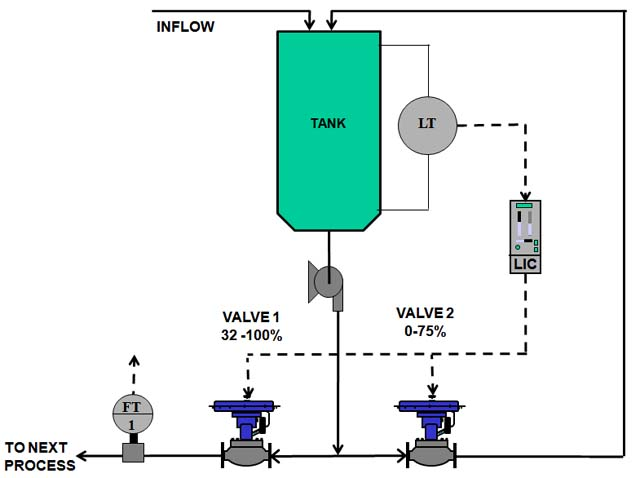
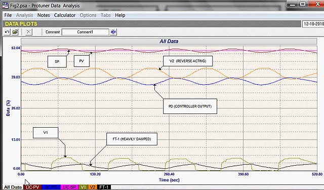
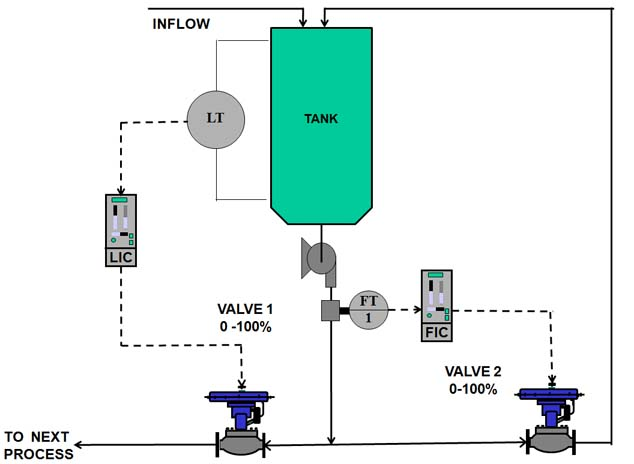

|
| [Home] [About us] [Contact us] [Training] [Optimisation services] [Protuner] |
| [Loop signatures] [Case histories] |
Control Loop Case History 116
The universal, almost complete lack of knowledge of practical control never ceases to astound me. Very few people have any understanding of the basic practical principles of the operation of feedback control. This is of course due to the almost complete lack of education in the field of practical control, which is a subject I have continually referred to in these articles. Everyone has been trained using complex mathematics which is very difficult to apply in real life. Hence most people learn by trial and error, without ever gaining a proper understanding of the real practical basics. The instincts and ideas most people eventually gain are often completely wrong, and sometimes misleading. In recent months I have been looking at comments on regulatory control by so called experts on an internet “chat” site, and cannot believe the nonsense that is contributed in a very learned manner. The result of this lack of knowledge results in most control loops operating ineffectively and often very badly in automatic. Although this manifests itself mostly though lack of diagnosis of problems within the loop, and almost universally bad tuning (which is itself mostly due to lack of scientific methodologies), occasionally one finds control loops that cannot work properly due to poor control strategies. I recently came across a classic case of this whilst optimising some controls at a large steel production plant. The loop in question (shown in Figure 1) is for controlling the level in a vessel. The primary requirement of the controls is to keep the level as constant as possible. The inflow into the vessel can fluctuate quickly and quite substantially, so there is need to use a fast control to deal swiftly with such load disturbances.  It can be seen that a rather strange split-range control system has been configured. The main outflow from the tank is pumped through valve V1 which is ranged from 32-100%, whilst a second flow is taken from the output of the same pump, and recirculated back into the tank via valve V2 which is ranged from 0-75%. An important point to note is that valve V2’s CV is about half that of valve V1, which would indicate that it could pass about half the flow that could go through valve V1 if both valves were fully open. This is significant as it would have a large effect on the level control. The reason why I was asked to look at this loop was that it was generally cycling, so the level was not constant. On enquiring why the rather peculiar control strategy had been employed, I was informed that it was to ensure that the flow through the pump never dropped below a certain minimum, to avoid damage to the pump. Their way of going about this was certainly very strange. I would like to have been able to talk to the people who designed it, but unfortunately it was done overseas. However for the life of me I cannot see how they determined the strategy and decided on the very odd split ranges, which appear to make no sense whatsoever. Split range control is used often for a variety of applications, one of the most common being heating and cooling systems. However they are also used for other applications, and the people who designed this particular system obviously thought it was a good solution. However one must be very careful when employing split range control, as these systems loop are invariably set up incorrectly. If the ranging is not done correctly, instability, and generally poor control can occur. The reason for this is very basic. The response of a control loop to a change in error may be broadly said to be primarily due to the product of the controller gain and open loop process gain, Kp x PG. (Obviously there are other factors that can affect it as well, but these are the main two factors, and they should always be borne in mind.) As discussed in my article Loop Signature LS1-3, the process gain of an integrating loop is measured by making a step change on the process demand (controller output) when the process is balanced, i.e. inflow and outflow to and from the vessel are equal, so that the level is constant. The process gain is found by measuring the slope of the resulting ramp in level and dividing it by the size of the step change on the process demand. (The inverse of the process gain is the tank retention time.) The main problem encountered with split range controls is that in most instances the people designing the loop don’t take process gain into account and arbitrarily assign range values to each valve. The correct way to split the ranges is to ensure that the process gain remains constant over the whole range of controller output irrespective of the position of the two valves. This can be determined by open loop tests over various parts of the control range. Many, if not most of the split range systems I encounter have been ranged incorrectly. If the process gain is not constant then the control response will change. The problem of cycling being experienced by the loop here is largely due to the fact that the designer of the loop obviously had no idea about process gain, and arbitrarily assigned ranges to the valves. Say valve V1 was working, with the other valve V2 fully closed, and a tuning was performed under these conditions. Then let’s say that the load got smaller and valve V2 started opening. This would cause the process gain to start changing, and the tuning would now be wrong. This could result in cycling by itself. The closed loop test shown in Figure 2 is quite interesting. The loop is cycling. The average value of the controller’s output (PD) is roughly 37% which is the balance point at which the inflow and outflow to and from the tank would be the same at the time of the test. (The level would remain constant at the balance point). At this PD value with the ranging of the two valves, valve V1 should be open to about 4%, and valve V2 should be at about 45%. These values are pretty close to the actual valve feedback signals which are shown in the recording. Once can see several problems that are causing the cycle.  One is that as a very general rule valves do not operate well below 20%. In this low region the installed characteristics may be very non-linear. Also there may be a very high differential pressure across the valve with the valve so close to seat. These factors can cause instability. [Unfortunately the flow recording FT-1 which is the flow passing through valve V1 is not good as there is obviously extremely high damping (filtering) on its output.] The valve feedback signal shows the valve fairly suddenly opening to about 5.5% when the actual controller output signal gets to about 38%. This sudden opening probably means that the valve cannot modulate below this value. This will cause a sudden increase in flow out of the vessel, and the level will start dropping, which in turn will cause the level controller to start increasing its output to restore the level. Valve V1 immediately shuts again, changing the flow through the pump, and the level rises again. This results in the cycle that is occurring. This is obviously rather unfortunately occurring when the load through the vessel is such that valve V1 is so close to seat. However it would probably also occur if the load was higher and valve V1 was further open, as the return flow though valve V1 would be changing as the level moves around, and this would affect the process gain, and hence the response.  One needs to sit back and think a little more logically. What are the control requirements? They are simply: 1.Keeping the level as constant as possible, and Limiting the flow below a low value in reality is most easily done by using a flow control loop, with the setpoint being the low limit. This is shown in Figure 3. Under normal higher load conditions, the flow though the pump will be above the limit. This automatically will result in Valve V2 being closed under normal conditions, and thus it will have no affect whatsoever on the level loop. If the load does decrease and drops below the minimum flow point, the flow controller will smoothly open the valve to keep the flow at the minimum setpoint. This will minimise any effects on the level loop, and should prevent cycling. To implement the new strategy would require configuring a flow controller, and installing a flow transmitter on the pump output. The controller would cost nothing, but the transmitter could be expensive even though a high quality, high accuracy instrument is not needed in this case. However fortunately flow transmitter FT1 was not actually very important and it was decided that it could be moved to measure the pump output flow. This example is an excellent case of people setting up control systems, with no knowledge about the practical aspects of control, and this often results in control problems, they did not foresee.
Michael
Brown is a specialist in control loop optimisation, with many years of
experience in process control instrumentation. His main activities are
consulting, and teaching practical control loop analysis and
optimisation. He gives training courses which can be held in clients'
plants, where students can have the added benefit of practising on live
loops. His work takes him to plants all over South Africa, and also to
other countries. He can be contacted at:
|